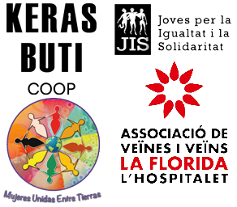

PROJECTES

AGROECOLOGIA I ECOFEMINISMES
AGROECOLOGIA I ECOFEMINISMES
Barris com La Florida es van construir sobre camps de conreu en processos que van transformar els paisat- ges i l’economia de manera accelerada i violenta, amb el desplaçament de desenes de milers de persones des d’altres territoris amb ecosistemes agraris diferents i economies que encara conservaven molts trets de les economies de subsistència camperoles anteriors al ple desenvolupament del capitalisme. Aquest subs- trat sociològic i cultural, en un dels barris amb major densitat poblacional d’Europa i davant l’actual crisi ecològica podria ser útil per donar resposta a la pregunta: què menjaran les ciutats del futur? i treballar en pràctiques i polítiques que no facin de l’alimentació o de l’ecologia un nou signe de distinció.
Aquest eix de treball es vincula a l’eix sobre cultures subalternitzades doncs trobem necessari no escindir la cultura de l’agroecologia o l’economia feminista. Alhora que aquests àmbits, en relació a la comunalitat i a la ciutat de l’Hospitalet, no es poden plantejar sense posar al centre els processos migratoris. Podem en- tendre la cultura com les maneres de veure, entendre i estar al món. D’altra banda l’agroecologia proposa restituir sistemes productius i de reproducció de la vida mediambientalment sostenibles i socialment justos per tornar a implementar sistemes agraris vinculats a la cura i la redistribució dels recursos, per això neces- sitem incidir en el tipus de societat que construïm i que dotem de sentit.

XARXA DE SUPORT MUTU

ESCOLA POPULAR

LABORATORI DE CUINA
SOTE L'ASFALT L'HORTA
PROMOU I FINANÇA:

ENTITATS ACTIVADORES:
CONTACTA AMB NOSALTRES
On
C/ dels Pins 10, Hospitalet de Llobregat
Els nostres horaris
Dimarts de 17h a 20
Telefon
641443061
Correu
hola@lafloridasaveina.com